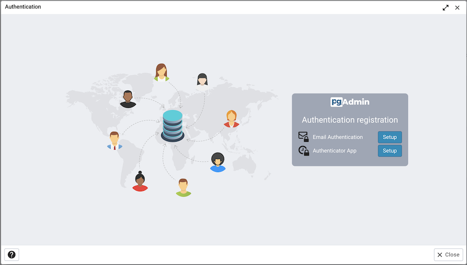

Enabling two-factor authentication (2FA)¶
About two-factor authentication¶
Two-factor authentication (2FA) is an extra layer of security used when logging into websites or apps. With 2FA, you have to log in with your username and password and provide another form of authentication that only you know or have access to.
Setup two-factor authentication¶
To set up 2FA for pgAdmin 4, you must configure the Two-factor Authentication settings in config_local.py or config_system.py (see the config.py documentation) on the system where pgAdmin is installed in Server mode. You can copy these settings from config.py file and modify the values for the following parameters.
Parameter |
Description |
|---|---|
MFA_ENABLED |
The default value for this parameter is True. To disable 2FA, set the value to False |
SUPPORTED_MFA_LIST |
Set the authentication methods to be supported |
MFA_EMAIL_SUBJECT |
<APP_NAME> - Verification Code e.g. pgAdmin 4 - Verification Code |
MFA_FORCE_REGISTRATION |
Force the user to configure the authentication method on login (if no authentication is already configured). |
NOTE: You must set the ‘Mail server settings’ in config_local.py or config_system.py in order to use ‘email’ as two-factor authentication method (see the config.py documentation).
Configure two-factor authentication¶
To configure 2FA for a user, you must click on ‘Two-factor Authentication’ in the User menu in right-top corner. It will list down all the supported multi factor authentication methods. Click on ‘Setup’ of one of those methods and follow the steps for each authentication method. You will see the Delete button for the authentication method, which is already been configured. Clicking on Delete button will deregister the authentication method for the current user.
You can also force users to configure the two-factor authentication methods on login by setting MFA_FORCE_REGISTRATION parameter to True.